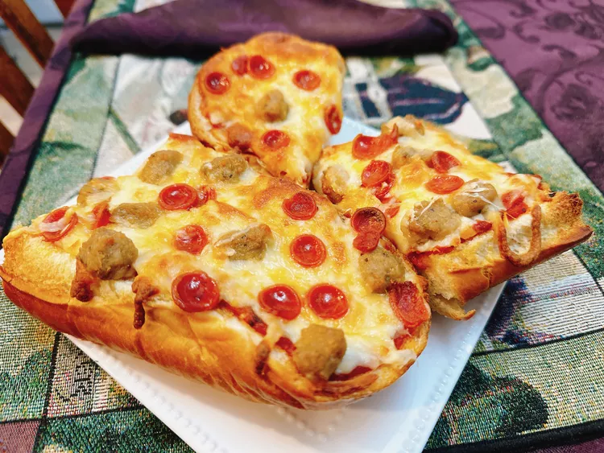

Baguette Pizza

Sliced Baguette Pizza
Take a regular baguette and split lengthwise to create a tasty pizza.
Toppings can be as simple as sauce and cheese,
or upgrade with pepperoni and sausage.
Ingredients
- 1 French baguette
- 1/2 cup pizza sauce, or as needed
- 2/3 cup shredded mozzarella cheese
- 2 ounces cooked and crumbled sausage
- 2 ounces mini pepperoni slices
Steps
- Preheat the oven to 375 degrees F (190 degrees C).
- Split baguette in half lengthwise. Warm pizza sauce in a microwave-
safe bowl until hot, about 45 seconds.
- Spread pizza sauce on baguette, sprinkle on cheese, and scatter
sausage and pepperoni on top as desired.
Place pizza onto a baking tray.
- Bake in the preheated oven until cheese is golden, about 18 minutes.
Optional step: turn on the oven’s
broiler, set a rack 6 inches below the heating element, and broil the
pizza for a deeper color, 1 to 2 minutes.
- Cut pizza crosswise into slices. Serve and enjoy.